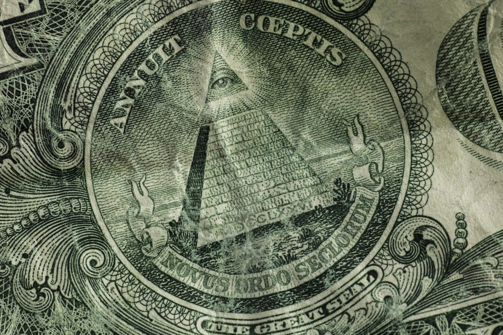

Believing in conspiracy theories often offers an escape from reality or a sense of pride. The two main reasons people buy into conspiracies are that they have some traumatic past they wish to get away from or that they have a desire to feel special by being a part of a small group that knows the "truth."

One popular theory among conspiracy theorists is that there is a secret group that controls the world. A common name for this group is the Illuminati.
Read More
The Flat Earth theory is pretty self explanatory.It is the idea that the Earth is flat. This includes the idea that the government faked photos of the Earth being round.
Read more
QAnon is a far-right conspiracy that believes there is a secret satanic group controlling our government. This conspiracy led to the January 6th Capitol riots.
Read more
Is there any reason to these conspiracies? As mentioned before, it offers as an escape from reality. Additionally, it can stray quite far from reality. Many popular conspiracy theories have large followings of devoted believers despite the strong evidence against them and in some cases complete debunking of the theory. While conspiracy theories are often fun ideas to think about, they are usually based on little to no truth and can cause more harm than they do good.